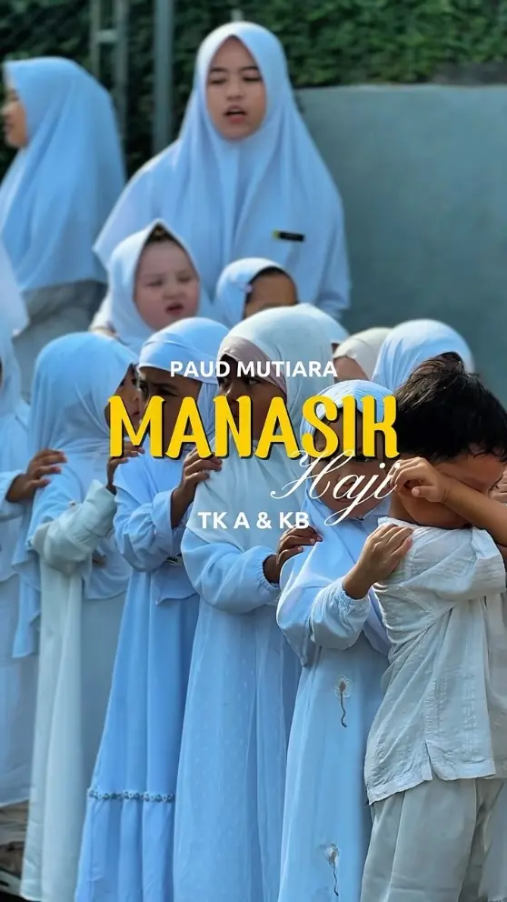
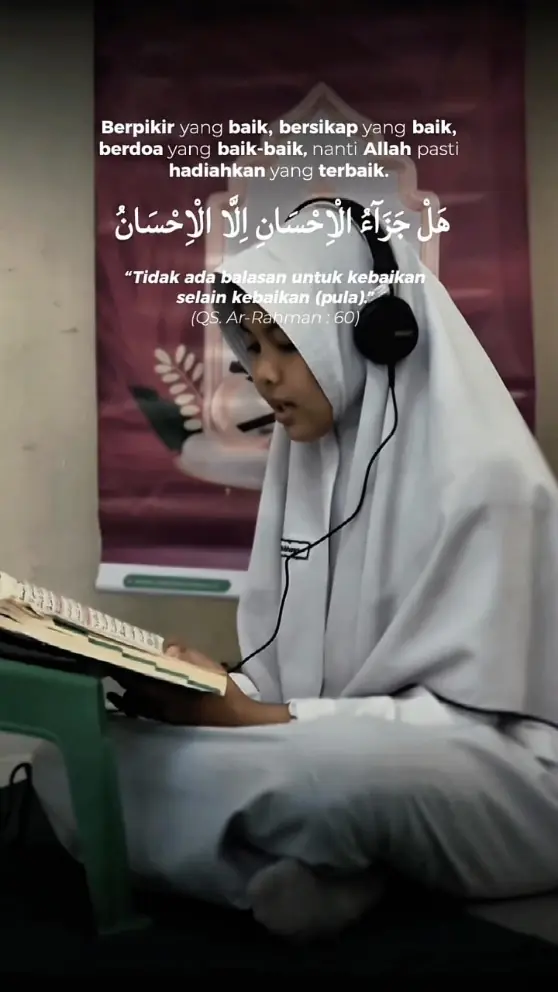
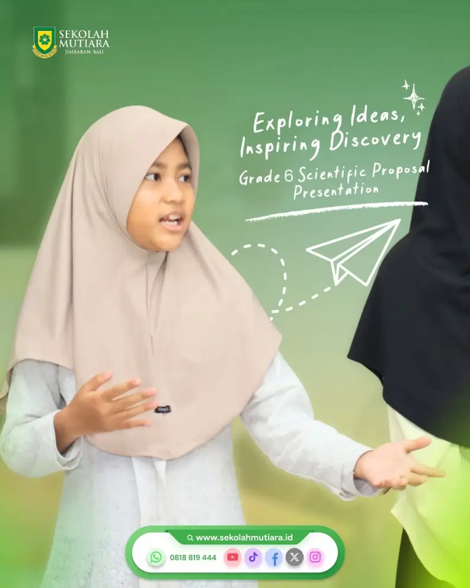
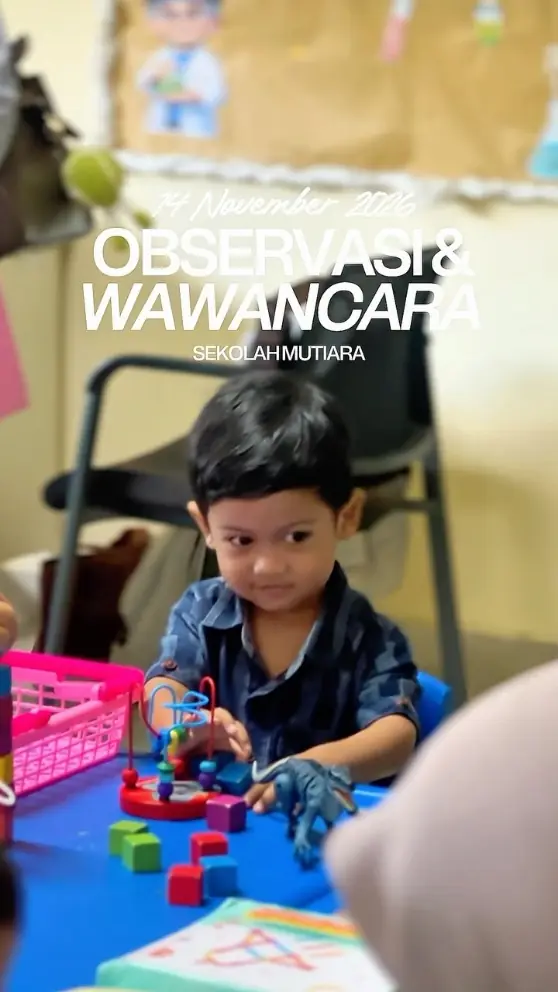
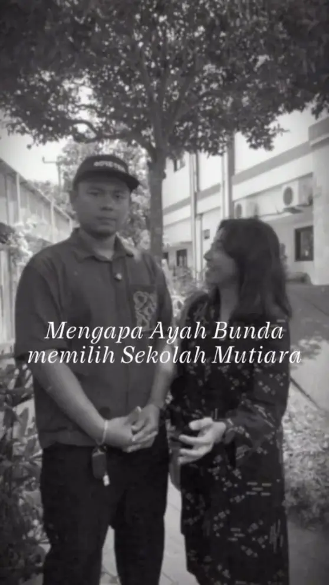
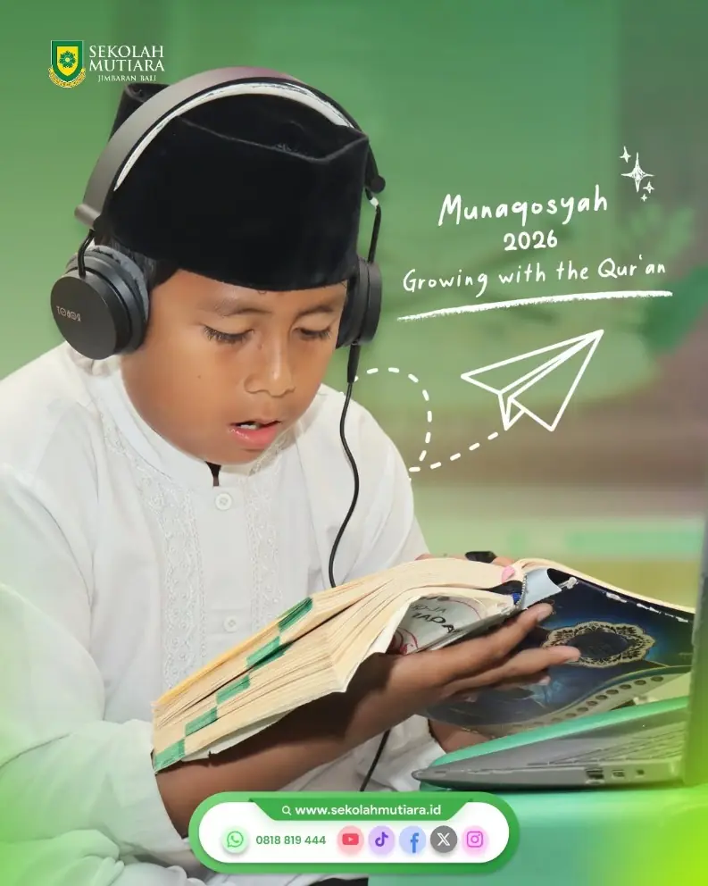
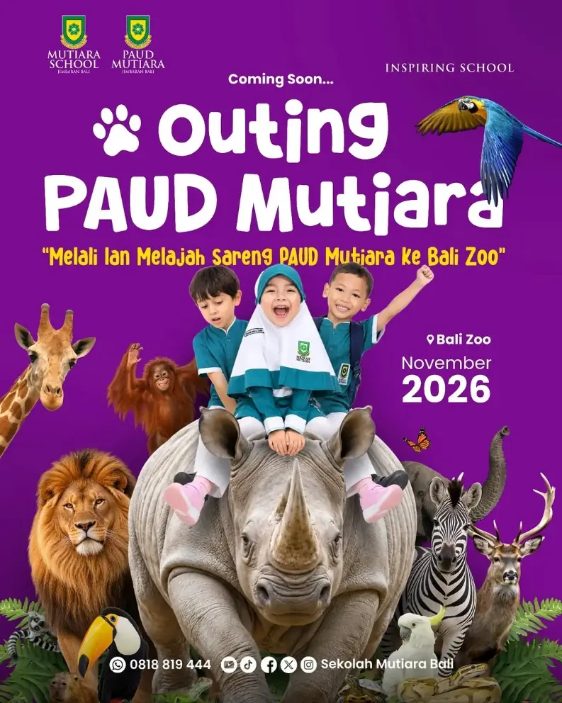
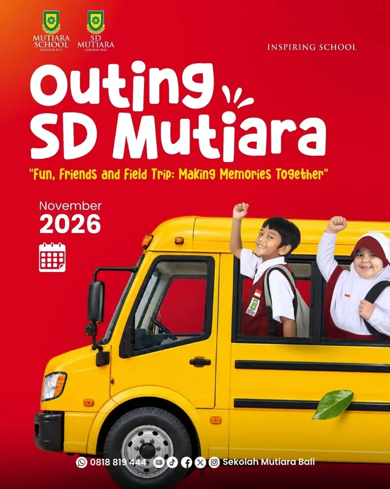

Blog
News, events and everyday moments at Mutiara School Bali, written from our official Instagram posts.

Mutiara JHS Theater Goes Live on RRI PRO 1 Denpasar with “Jemputan yang Tak Kunjung Datang”
Four Mutiara junior high students perform “Jemputan yang Tak Kunjung Datang” live on RRI PRO 1 Denpasar on Sunday, 22 November 2026.Read article
A Friday Reminder from Mutiara School: Keep Spreading Kindness
Mutiara School’s Friday message: never tire of doing good, even through the smallest acts, and keep spreading kindness.Read article
Happy World Children’s Day 2026 from Mutiara School
On World Children’s Day, 20 November 2026, Mutiara School celebrates every child as a precious gift with unique dreams and endless potential.Read article
Exploring Ideas, Inspiring Discovery: Grade 6 Scientific Proposal Presentations
On 12 November 2026, Grade 6 students at Sekolah Mutiara presented their scientific proposals, building critical thinking and confidence.Read article
Getting to Know Our Future Students: Observation and Interview Day
Mutiara School held observation and interview sessions for prospective students on 14 November 2026 as part of new student admissions.Read article
Why Parents Choose Mutiara School
In a new video, Mutiara School parents share why they chose the school. Watch it on Instagram and register your child today.Read article
Munaqosyah 2026: Growing with the Qur’an at Sekolah Mutiara
Sekolah Mutiara held its Munaqosyah 2026 on Friday, 6 November 2026, where students showed their Qur’an recitation and memorisation.Read article
Mutiara Kindergarten Outing 2026: Off to Bali Zoo!
PAUD Mutiara’s November 2026 outing takes the little explorers to Bali Zoo to discover wildlife and make memories with friends.Read article
Mutiara Elementary School Outing 2026: Fun, Friends and Field Trips
In November 2026, Mutiara Elementary students go on educational field trips to Secret Garden, Bali Zoo, Bedugul Asri and The Sila’s.Read articleReady to join Mutiara School?
Message our team on WhatsApp for enrolment details, fees and school visits.
Enrol via WhatsApp